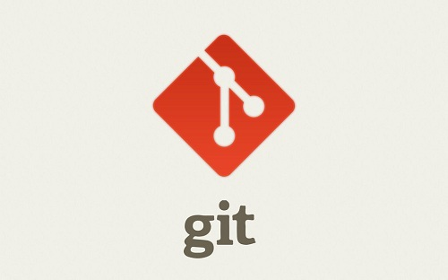

Day01关于Vim的学习体会,以及个人笔记
1.使用VIm创建一个.txt文件
格式：vim 文件名.txt
按i o a 键都可以进入编辑模式，在编辑模式下除去Esc按键以外 任何按键都可以视为字符输入
输入：wq 文件会在存储后退出
2.Vim中的常用快捷键：光标移动
（1）h j k l 分别对应左 下 上 右 光标移动
（2）Ctrl+f 屏幕向下移动一页（常用）
ctrl+b 屏幕向上移动一页（常用）
ctrl+d 屏幕向上移动半页（常用）
ctrl+u 屏幕向下移动半页（常用）
（3）0/Home键 （常用）
作用：移动到本行第一个字符
（4）$/End键 （常用）
作用：移动到本行的最后一个字符
（5）H M L G nG gg n
- 学无止境
- 2019-9-28
- 34567已阅读
- 9999
Day02关于Git与GitHub的基础学习笔记_01
git init 将我们手动创建号好的文件夹变成一个Git仓库 git add 文件名 将文件添加到Git仓库 注:文件一定要在Git仓库的子目录下,否则Git搜索不到 git commit -m "wrote a 文件名不带后缀 file" 将文件提交到Git仓库,-m 后输入的是本次提交的说明,可以输入任意内容,最好见名知意 git config --list 可以检车配置信息,会显示账号密码和关联的远程库的信息
- 学无止境
- 2019-9-29
- 34567已阅读
- 9999
Day03关于Git与GitHub的基础学习笔记_02

什么叫分支? 每次提交，Git都把它们串成一条时间线，这条时间线就是一个分支 一开始Git帮我们创建的master就是分支,也是主分支,HEAD一般默认指向主分支 每次提交，master分支都会向前移动一步，这样，随着你不断提交，master分支的线也越来越长
- 学无止境
- 2019-9-30
- 34567已阅读
- 9999
Day04关于Linux的基础命令_01
ifconfig
查看本机网卡
ls /
查看系统目录结构
shutdown -h 时间
关机 将时间改为now 可以立即关机
-r
重启,now为立即重启
-c
取消前一个关机命令
logout
退出登录
- 学无止境
- 2019-9-28
- 34567已阅读
- 9999
Day04关于Linux的基础命令_02
inux 磁盘管理
df [-ahikHTm] [目录或文件名]
检查文件系统的磁盘空间占用情况,可以利用该命令来获取硬盘被占用了多少空间，目前还剩下多少空间等信息
-a ：列出所有的文件系统，包括系统特有的 /proc 等文件系统
-k ：以 KBytes 的容量显示各文件系统
-m ：以 MBytes 的容量显示各文件系统
-h ：以人们较易阅读的 GBytes, MBytes, KBytes 等格式自行显示
-H ：以 M=1000K 取代 M=1024K 的进位方式
-T ：显示文件系统类型, 连同该 partition 的 filesystem 名称 (例如 ext3) 也列出
-i ：不用硬盘容量，而以 inode 的数量来显示
du [-ahsSkm] 文件名或目录名
查看磁盘使用空间
-a ：列出所有的文件与目录容量，因为默认仅统计目录底下的文件量而已
-h ：以人们较易读的容量格式 (G/M) 显示
- 学无止境
- 2019-9-28
- 34567已阅读
- 9999